工程材料与机械制造基础（第3版）
Overview of Metal Forming
01/概述
压力加工（塑性加工）：利用金属坯料在外力作用下产生塑性变形，从而获得所需形状、尺寸和性能的毛坯或零件的加工方法。
六大方法：轧制、挤压、拉拔（生产原材料）；自由锻、模锻、板料冲压（生产毛坯）。
01/概述
优点：产品质量高、性能好、缺陷少；细晶粒组织、组织致密、锻造流线→力学性能提高；材料利用率60%~70%（先进方法85%~90%）；易实现机械化和自动化。
缺点：与铸造比成本较高、成形较困难；固态下成形→无法获得内腔复杂的产品。
应用：机械、冶金、船舶、航空航天、电子、仪器仪表、国防工业。
Plastic Deformation & Recrystallization
02/理论
塑性变形最常见的方式是滑移：在切应力作用下，晶体的一部分相对于另一部分沿滑移面和滑移方向发生相对位移。
滑移通过晶体内的位错运动来实现，只有位错中心的少量原子作微量位移，所需切应力比理论值低很多。
02/理论
a.未受力 b.弹性切向变形 c.切向弹塑性变形 d.塑性变形后
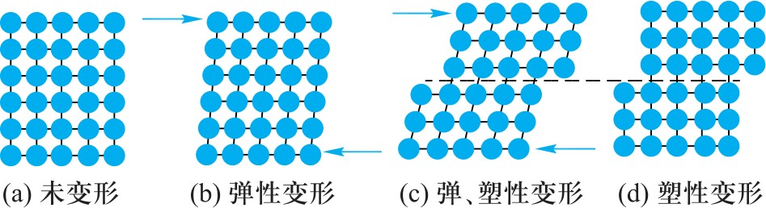
02/理论
通过位错运动实现滑移，少量原子作微量位移→所需切应力远低于理论值。
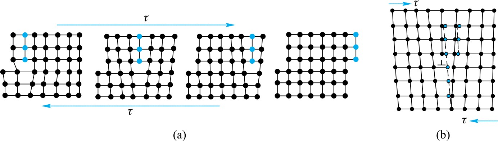
02/理论
孪生：晶体一部分沿孪生面相对另一部分转动，形成镜像对称。变形量小，但改变晶格位向有利于滑移继续。
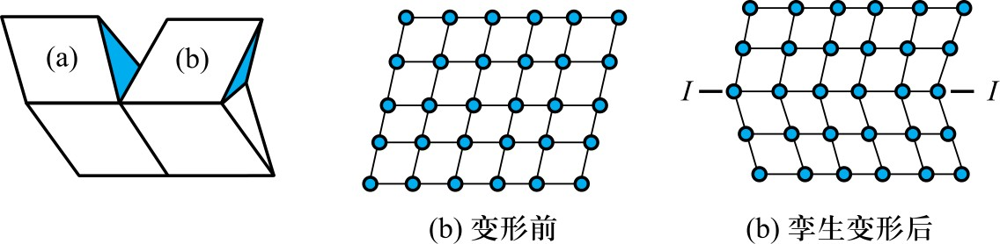
02/理论
多晶体由不同位向的晶粒组成，变形包括晶内变形（各单晶体滑移+孪生）和晶间变形。
晶界对变形造成很大障碍→相邻晶粒位向差越大影响越大。晶界越多→变形抗力越大。
细晶强化：细晶粒多晶体强度高于粗晶粒。除特殊要求外，获得细晶组织是提高性能的重要措施。
02/理论
远离晶界处变形明显，晶界附近变形很小→晶界变形抗力远高于晶粒本身。
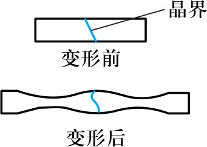
02/理论
金属在常温下塑性变形后：晶粒沿变形最大方向伸长；晶格畸变、产生内应力；晶粒间产生碎晶。
冷变形强化（加工硬化）：随冷变形程度增加→强度/硬度增高，塑性/韧性下降。
原因：晶格畸变越严重、位错交互作用→塑性变形阻力增大→滑移难于进行。
02/理论
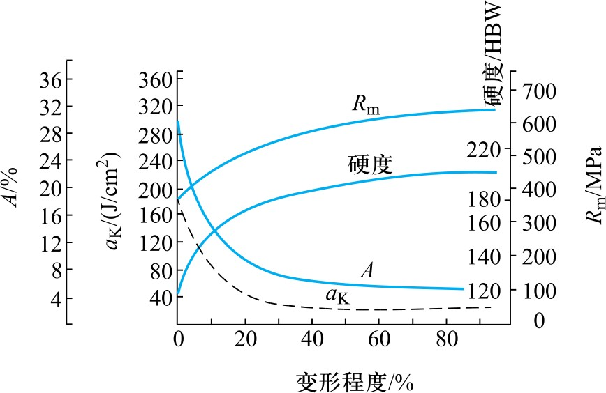
02/理论
加工硬化是不稳定状态。加热时原子获得热能→趋于稳定。随温度升高依次发生回复→再结晶→晶粒长大。
回复：T回=(0.25~0.3)T熔，原子回复正常排列，晶格畸变基本消除，强度硬度稍降。
再结晶：T再=0.4T熔，形成新等轴晶粒→强度硬度显著降低，塑性韧性显著提高，内应力完全消除。
02/理论
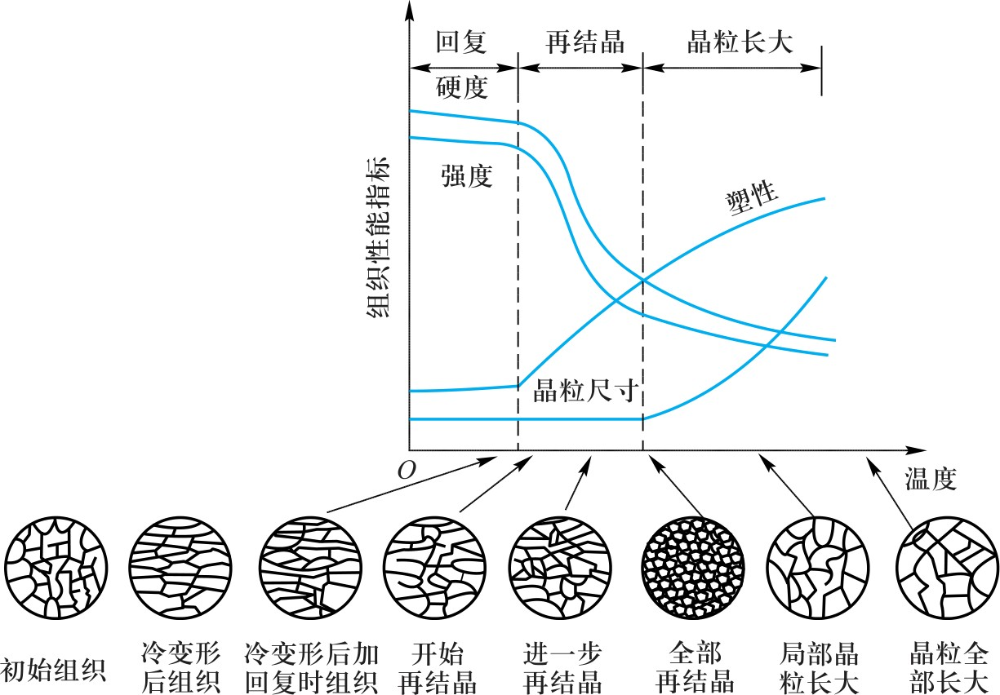
02/理论
金属在再结晶温度以上受力变形称为热变形。加工硬化和再结晶同时存在，加工硬化随时被再结晶消除→无加工硬化。
热变形优点：以较小功完成较大变形，压合气孔/缩松/微裂纹→致密度提高。塑性加工多采用热变形。
晶粒长大：再结晶后继续升温或延长保温→大晶粒吞并小晶粒→降低力学性能，应避免。
临界变形度（2%~10%）→再结晶晶粒特别粗大；超过临界变形度→晶粒细化。
02/理论
热变形使材料内部夹杂物沿变形方向形成流线组织→纤维组织。纤维组织不因热处理而改变，只能通过锻造改变分布。
锻造比 Y=S₀/S：Y=2~5时开始形成纤维组织，纵向性能升高，横向下降→各向异性。
设计原则：最大正应力方向∥纤维方向；最大切应力方向⊥纤维方向；纤维沿零件轮廓分布。
02/理论
a.轧制切削（最差）b.锻后切削 c.热轧后切削 d.模锻（最合理→寿命最高）
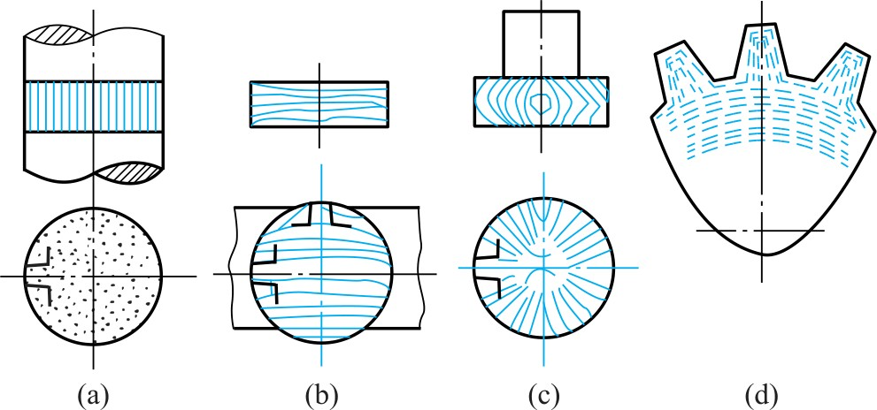
02/理论
可锻性=塑性高+变形抗力小。影响因素：金属本质（化学成分+组织结构）和变形条件（温度+速度+应力状态）。
纯金属>合金；低碳钢>高碳钢；碳钢>合金钢；固溶体>化合物；单相>多相；细晶>粗晶。
温度升高→塑性提高、变形抗力减小。热变形抗力仅为冷变形的1/79~1/79。
02/理论
始锻温度：固相线以下150~250°C；终锻温度：约800°C。
过热（晶粒粗大，可正火恢复）vs 过烧（晶界氧化/熔化，不可挽回）
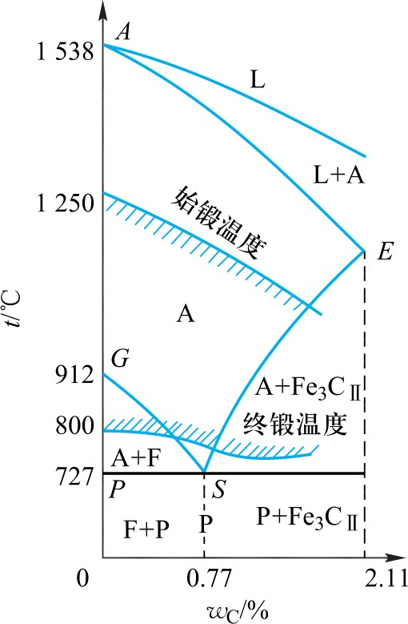
02/理论
临界值C以下：速度↑→抗力↑塑性↓（加工硬化积累）；C以上：热效应↑→再结晶加速→塑性↑抗力↓（高速锻造原理）。
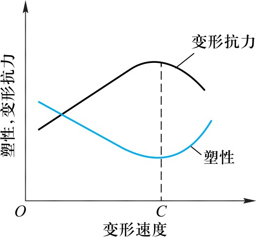
02/理论
挤压（三向受压）→塑性最高。拉拔（两向受压一向受拉）→塑性较低。镦粗（心部三向压，侧表面拉）→侧表面易裂。
塑性好金属→允许拉应力，减少能耗；塑性差金属→避免拉应力，采用三向压应力。
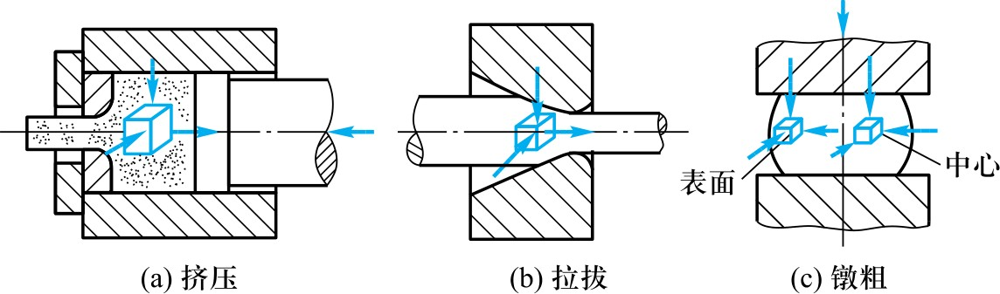
Open-Die Forging
03/自由锻
自由锻：用简单通用工具或在锻造设备上、下砧之间，利用锤头冲击力或上砧静压力直接使坯料变形。
设备：空气锤（<100kg小件）、蒸汽-空气自由锻锤（中型/较大型件）、水压机（大型件→变形速度慢，改善可锻性）。
优点：工具设备简单、通用性好、成本低。缺点：精度低、余量大、生产率低。
应用：单件小批→轧辊、发电机转子、汽轮机叶轮、大型曲轴。
02/理论
高压水(20~40MPa)推动工作柱塞→活动横梁+上砧向下→坯料变形。吨位用最大压力表示。
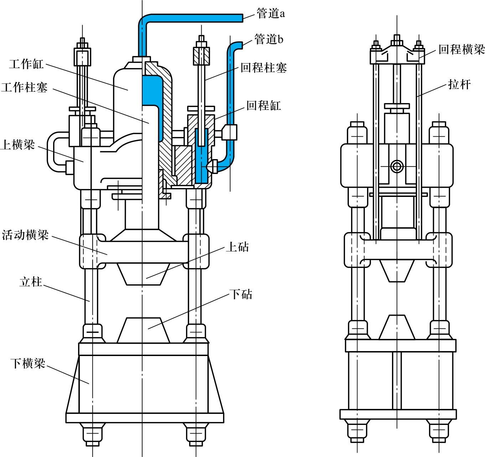
03/自由锻
镦粗：高度↓，截面积↑。用于盘类件（齿轮坯）和冲孔前准备。
拔长：截面积↓，长度↑。用于轴类件（轴、连杆、曲轴），芯棒拔长用于空心件。
冲孔：冲出通孔/不通孔。用于空心锻件（齿轮毛坯、圆环、套筒）。
弯曲：弯成一定角度/形状。切割、错移、扭转。
03/自由锻
① 绘制锻件图：零件图+敷料(余块)+加工余量+公差。锻件外形粗实线，零件外形双点画线。
② 选择锻造工序：饼块类→镦粗；轴杆类→拔长；空心类→镦粗+冲孔+扩孔/芯棒拔长；弯曲类→拔长+弯曲。
③ 确定坯料：m坯=m锻+m损；S坯≥Y·S锻（碳钢锭Y≥2.5~3），镦粗时高径比1.25~2.5。
④ 选择设备：根据坯料种类/质量/工序/设备能力综合确定。
03/自由锻
粗实线=锻件外形，双点画线=零件外形。尺寸线上=锻件尺寸，括号内=零件尺寸。
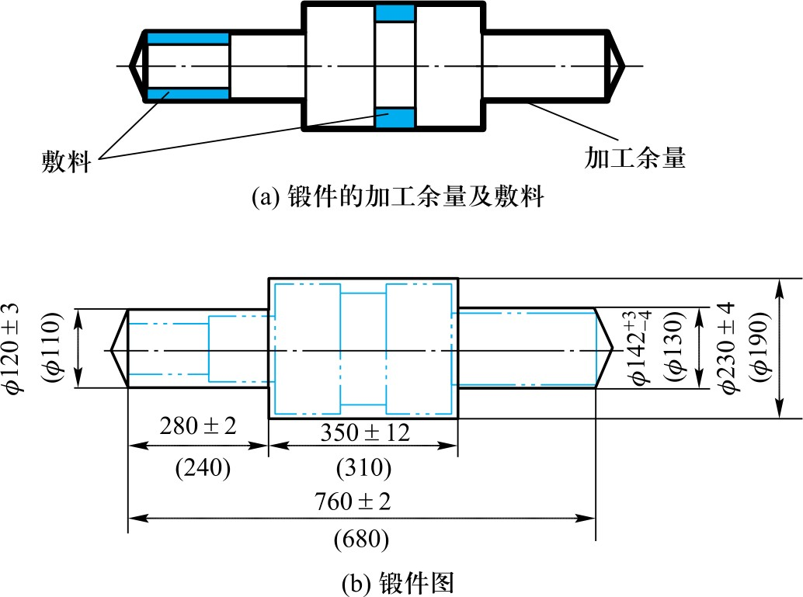
Die Forging
04/模锻
模锻：金属在外力作用下产生塑性变形并充满模腔而获得锻件。
设备：模锻锤、热模锻压力机、平锻机、摩擦压力机。
与自由锻比：精度高、余量小、纤维分布更合理、生产率高、易机械化。
缺点：设备投资大、锻模成本高、周期长。适用于<150kg的中小型锻件成批大量生产。
04/模锻
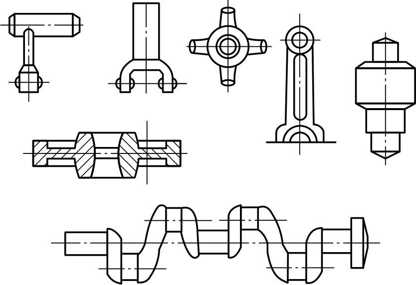
04/模锻
锻模由带燕尾的上模和下模组成。燕尾和紧固楔铁安装在锤头和模座上，键槽与键配合定位。
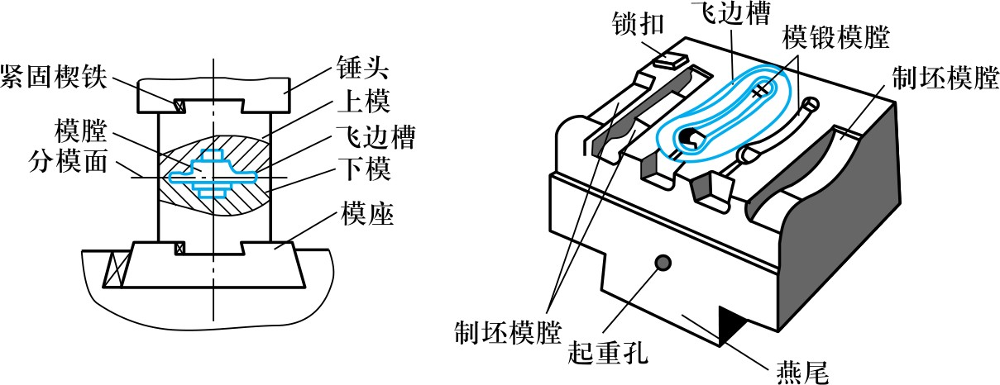
04/模锻
制坯模腔（改变坯料形状）：拔长模腔、滚压模腔、弯曲模腔、切断模腔。
模锻模腔（最终成形）：预锻模腔（无飞边槽）+终锻模腔（有飞边槽→增加三向压应力+容纳多余金属）。
04/模锻
拔长→滚压→弯曲→预锻→终锻→切边。
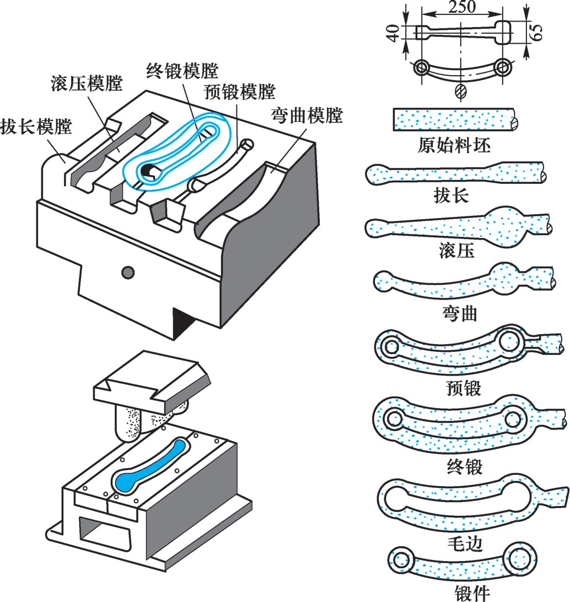
04/模锻
① 分模面：选在最大尺寸截面；上下模外形一致（防错模）；模腔浅而宽；敷料最少。
② 加工余量：一般1~4mm，公差±0.3~3mm。孔<30mm不锻出。
③ 连皮：模锻不能锻出通孔→留薄层金属，锻后与飞边一同切除。
④ 模锻斜度：外斜度5°~10°，内斜度7°~15°。圆角：外圆角r=1.5~12mm，内圆角R=(3~4)r。
04/模锻
d-d作分模面最合适：在最大截面、上下模外形一致、模腔浅宽、敷料少。
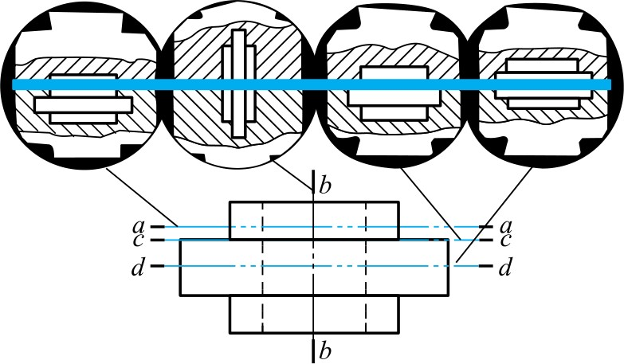
04/模锻
α=外斜度，β=内斜度，r=外圆角，R=内圆角，δ=连皮厚度。
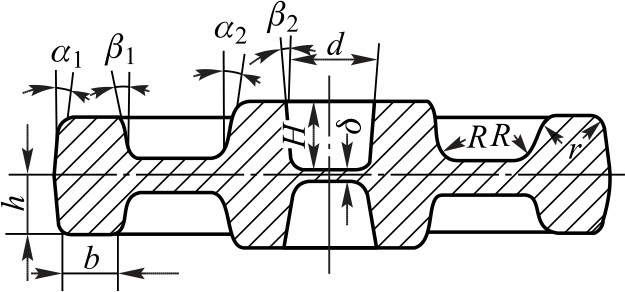
04/模锻
双点画线=零件轮廓外形。
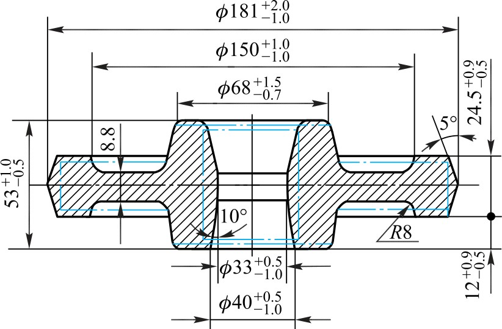
04/模锻
曲柄压力机上模锻：静压力、变形速度低→适合低塑性材料（耐热合金、镁合金）；一次行程完成→生产率高；有上下顶出装置→易机械化。
平锻机上模锻（卧式）：三部分锻模+两个分模面→可锻侧面凸台/凹槽件；可锻长杆类件和通孔。
摩擦压力机上模锻：行程和能量可调、单模腔。中/小批中小型件+低塑性合金。
04/模锻
电动机→带轮齿轮→曲柄连杆→滑块上下往复。锻模分别安装在滑块下端和工作台上。
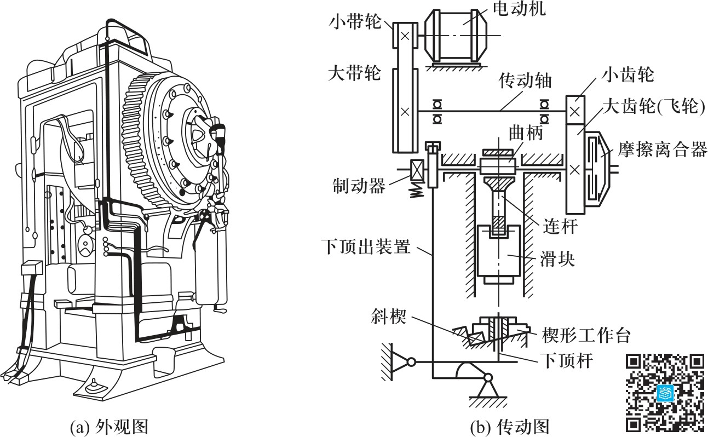
04/模锻
固定凹模+活动凹模合模夹紧坯料→主滑块带动凸模锻造成形。
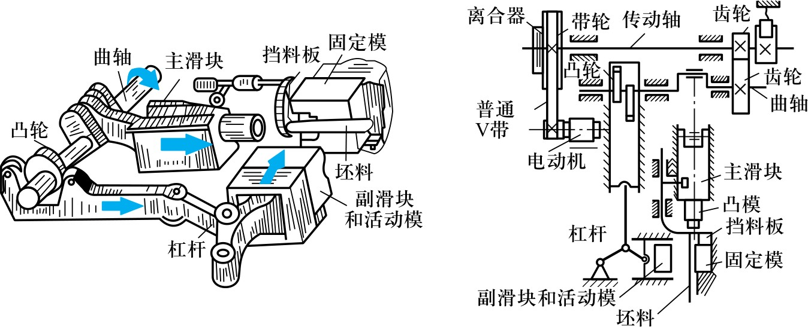
04/模锻
胎模锻：自由锻设备上用胎模生产模锻件。介于自由锻与锤上模锻之间，适用于中/小批小型件。扣模、筒模、合模。
精密模锻：两套不同精度锻模（普通锻模留0.1~1.2mm余量→切飞边酸洗→高精度锻模精锻）。中温或室温精锻→只适合小型件。
04/模锻
扣模（非回转体局部/整体成形）、筒模（回转体盘类件）、合模（复杂非回转体件）。
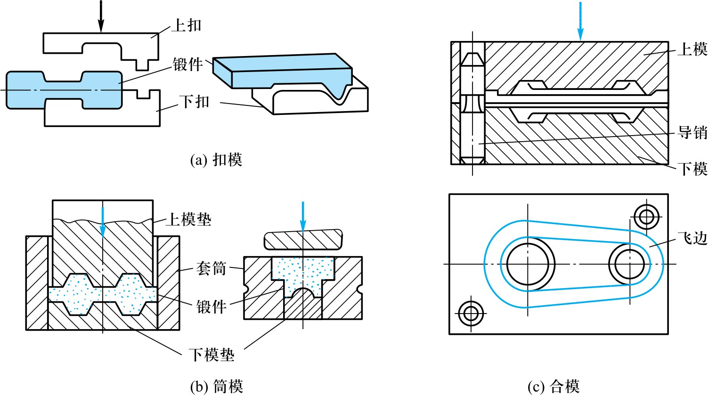
04/模锻
单件→自由锻经济；中批→胎模锻；大批→模锻。
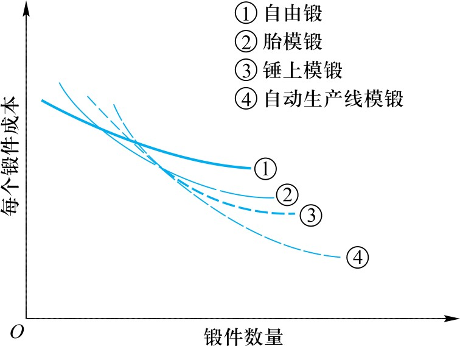
Sheet Metal Stamping
05/冲压
利用冲模在压力机上对板料施加压力使其变形或分离。通常在常温下进行（冷冲压），板厚>8~10mm用热冲压。
特点：生产率高、操作简单、精度和表面质量高、可冲形状复杂件、材料利用率高。
缺点：冲模制造复杂、成本高→只有大批量生产才经济。
设备：剪床（下料）和冲床（曲柄压力机，冲压成形基本设备）。
05/冲压
电动机→减速机构→曲柄连杆→滑块+上模上下往复→与下模配合完成冲压。
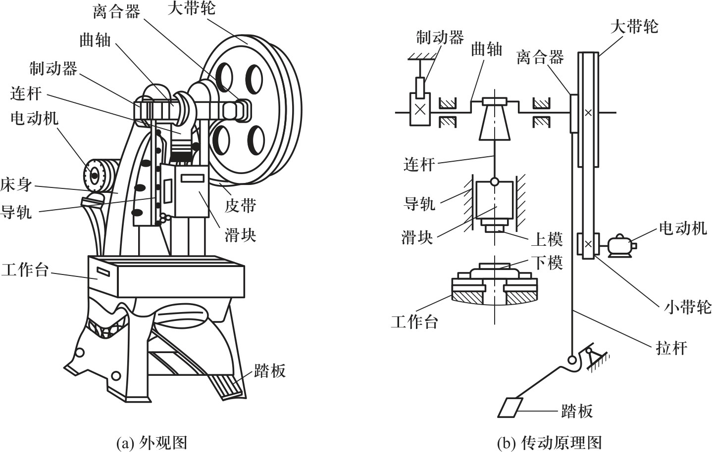
05/冲压
分离工序（使板料沿轮廓分离）：剪切、落料（冲下部分为成品）、冲孔（冲下部分为废料）。
成形工序（塑性变形不破裂）：弯曲、拉深、翻边、卷边、胀形。
05/冲压
冲裁变形过程：弹性变形→塑性变形→出现微裂纹→裂纹扩展汇合→板料分离。
断口区域：塌角、光亮带（尺寸准确、表面质量好）、剪裂带、毛刺。
模具间隙z一般为板厚t的5%~10%。凸凹模刃口尺寸：冲孔→凸模=孔尺寸；落料→凹模=外形尺寸。
05/冲压
落料：冲下为工件；冲孔：冲下为废料，带孔部分为工件。
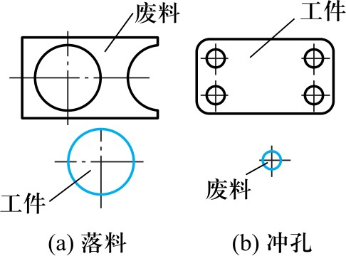
05/冲压
弹性→塑性→微裂纹→分离。断面：塌角+光亮带+剪裂带+毛刺。
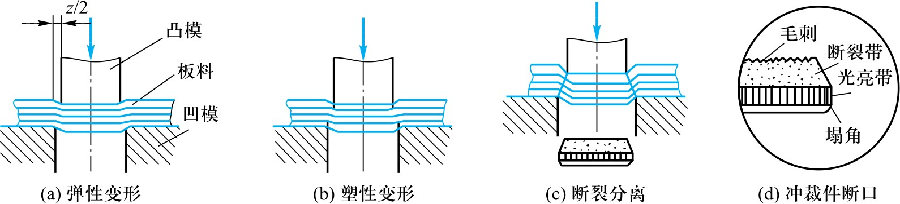
05/冲压
有接边排样→质量高、模具寿命长、材料利用率低；少无接边→相反。
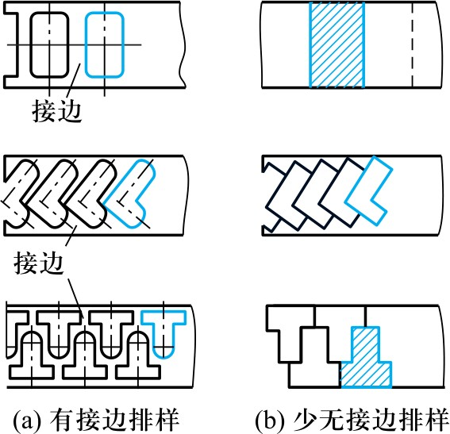
05/冲压
V形压边环+极小间隙(1%t)+凹模刃口小圆角+反压力顶杆→精密冲裁件。
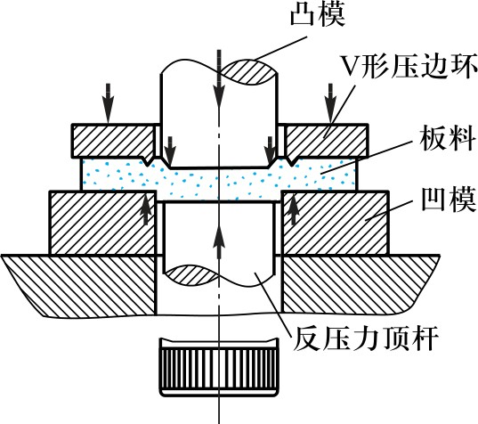
05/冲压
弯曲时内侧受压应力（压缩），外层受拉应力（伸长）。拉应力>抗拉强度→破裂。
最小弯曲半径r_min≥(0.25~1)t。弯曲曲线应⊥纤维方向（否则易裂）。
回弹现象：卸载后弯曲角度略增大（回弹角0°~10°）→模具角度应比产品小一个回弹角。
05/冲压
各种弯曲件示例。
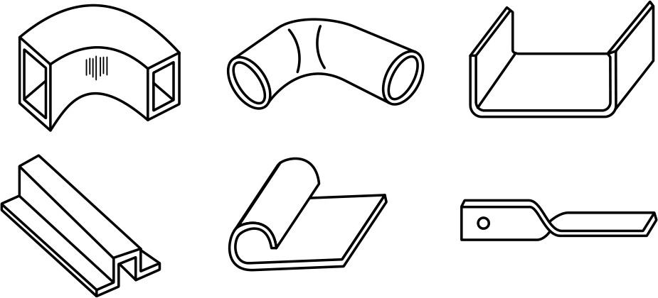
05/冲压
弯曲曲线∥纤维方向→容易破裂；弯曲曲线⊥纤维方向→质量好。
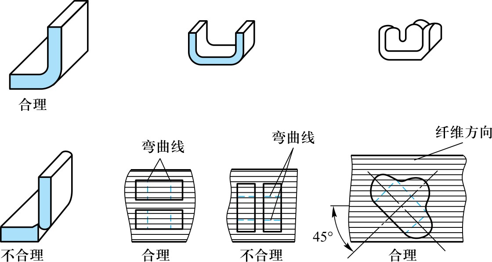
05/冲压
拉深：将板料变形为中空形状零件（筒形、锥形、球形、方盒形等）。
凸缘部分圆周切线方向受压→压应力过大时起皱→用压边圈防皱。
凸模圆角部位承受拉应力→变薄严重→拉裂→圆角r凸≤r凹=(5~10)t，间隙z=(1.1~1.2)t。
05/冲压
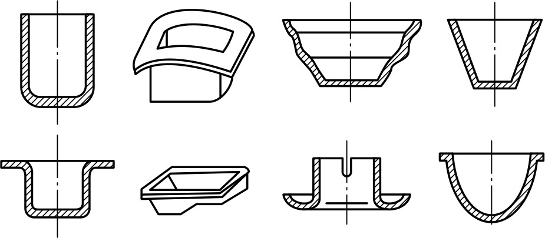
05/冲压
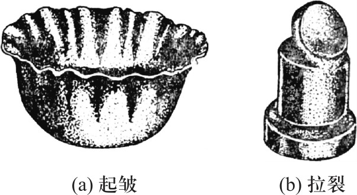
05/冲压
有压板/压力圈可防止起皱。
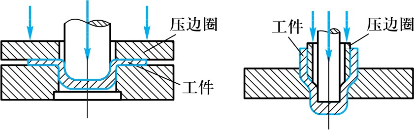
05/冲压
简单模（单工序模）：一次冲程一道工序。结构简单、成本低、生产率低→简单件批量生产。
连续模（级进模）：一次冲程不同位置完成多道工序。生产率高、易自动化→大批量中/小型件。
复合模：一次冲程同一位置完成多道工序。有凸凹模（外圆为落料凸模，内孔为拉深凹模）。精度高、生产率高、成本高。
05/冲压
凸模+凹模，导料板+限位销控制送料，导柱+导套保证精度。
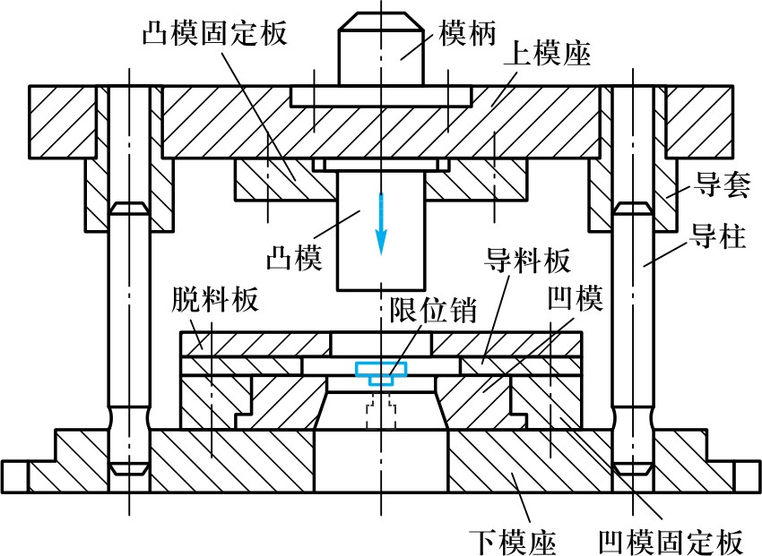
05/冲压
左侧落料+右侧冲孔→同一冲程完成。
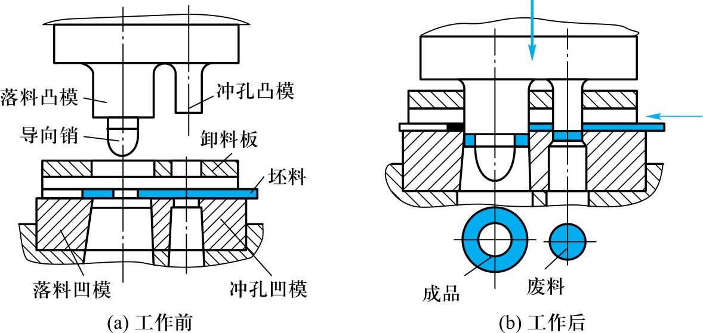
05/冲压
凸凹模：外圆=落料凸模，内孔=拉深凹模。同一位置完成落料和拉深。
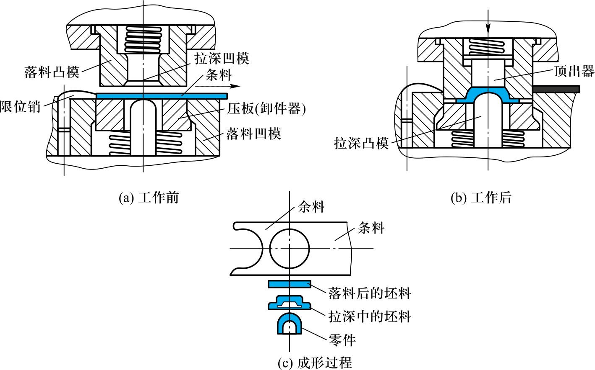
Advanced Metal Forming
06/特种
超塑性：低变形速率(10⁻²~10⁻⁴/s)、一定温度(~0.5T熔)、细晶粒(0.2~5μm)→伸长率>100%（钢>500%、锌铝合金>1000%）。
超塑性模锻：模具与坯料同温加热、极低变形速度(0.025mm/s)→一次完成，加工损耗降低一半。
超塑性无模拉拔：感应线圈局部加热拉拔→断面收缩率83%，精度±0.013mm。
超塑性气压胀形：板料+模具加热→通压缩空气→贴模成形。用于Ti/Al合金、双相不锈钢薄板。
06/特种
感应线圈局部加热→控制拉拔速度与线圈移动→等断面/不等断面制品。
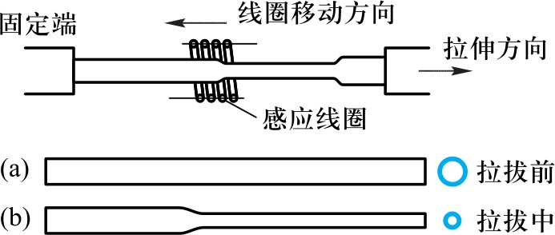
06/特种
粉末烧结预成形坯→加热→闭式锻模中锻造成零件。特点：尺寸精度高、组织均匀、无成分偏析。
高速钢车刀/钻头寿命提高1~2倍；Ti-6Al-4V发动机叶片/燃气轮机导向叶片；汽车齿轮/连杆。
新工艺：松装锻造、喷雾锻造（氮气喷射→99%相对密度预成形坯→锻造→切边）、粉末轧制等。
06/特种
制粉→成形→烧结→精密热锻→热处理→成品。
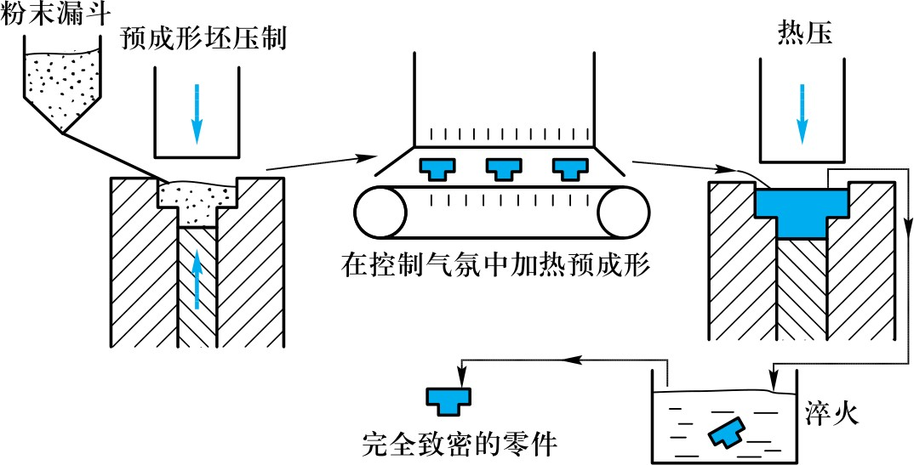
06/特种
辊锻：圆弧形模块轧辊旋转→坯料受压变形。用于长杆类件大批量生产（汽轮机叶片）。
楔横轧：两个同向旋转楔形轧辊→轧辊转一周形成一个锻件。用于轴类件（汽车/摩托车轴）。
斜轧：两轧辊轴线呈一定角度→旋转+直线运动。钢球、轴承滚子、麻花钻头。
摆动辗压：有摆角的上模旋转挤压→薄盘形锻件（铣刀片、汽车半轴）。
旋压：芯模旋转+旋压工具进给→筒形/回转体件（薄壁食品罐）。
06/特种
静液挤压：液体静压力(2000~3000MPa)传递压力→等静压力→适合低塑性材料（铍、铬、钼、钨）。挤压力小10%~50%。
发展趋势：柔性成形（高内压成形、无模液压成形）；精密塑性成形（净成形/近净成形）；数字化技术体系（CAD/CAE/CAM集成）；计算机集成制造(CIMS)。
Design of Forgings & Stampings
07/结构设计
自由锻是在平砧上用简单工具锻造→形状应尽量简单。
① 避免锥面和楔形（锻不出）。② 避免圆柱体与圆柱体相交（难锻）。
③ 避免加强筋和凸台（锻不出）。④ 复杂件可用锻-焊组合代替整体锻造。
07/结构设计
① 落料件外形应简单对称→便于排样、提高材料利用率。
② 弯曲件应避免孔太靠近弯边→防止孔变形。最小孔边距S≥(1.5~2)t。
③ 拉深件形状应力求简单对称→利于均匀变形。圆筒形最易拉深。
④ 冲压件上孔与孔、孔与边的距离应足够→防止材料撕裂。
总结
① 轧制：生产钢板/型钢/管材，高速精密化。② 挤压：型材/管材/零件，挤锻结合。
③ 拉拔：金属丝(φ0.02mm)/薄壁管，高精度。④ 自由锻：大型件唯一方法，单件小批。
⑤ 模锻：中小型件大批量，精度高、纤维分布合理。⑥ 板料冲压：薄板件大批量，生产率最高。
总结
单件/小批：自由锻（大型件唯一选择）。中批：胎模锻（工具简单、适应性广）。
大批/大量：锤上模锻、压力机上模锻（曲柄/平锻/摩擦压力机）、精密模锻。
关键考量：生产批量（首要因素）、锻件形状复杂程度、材料可锻性、设备能力、经济性。
总结
① 塑性变形机制：滑移（位错运动）、孪生 → 晶界阻碍 → 细晶强化。
② 冷变形强化：强度↑塑性↓。回复→再结晶→消除加工硬化。热变形=变形+再结晶同时进行。
③ 纤维组织：锻造比Y=2~5开始形成，Y>5接近极限。设计原则：正应力∥纤维，切应力⊥纤维。
④ 可锻性：取决于金属本质（成分+组织）和变形条件（温度+速度+应力状态）。三向受压塑性最好。
⑤ 模锻工艺：制坯模腔（拔长/滚压/弯曲/切断）+模锻模腔（预锻/终锻）。有飞边槽增加三向压应力。
⑥ 板料冲压：分离工序（落料/冲孔）+成形工序（弯曲/拉深/翻边/胀形）。模具：简单模/连续模/复合模。